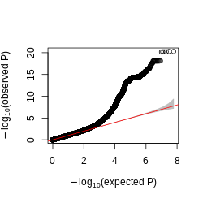
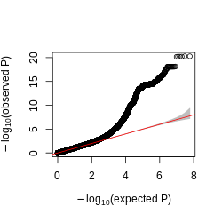
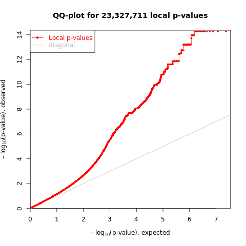
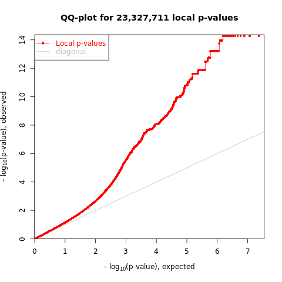

Weekly Log
Last updated: 2024-04-20
Checks: 6 1
Knit directory: GradLog/
This reproducible R Markdown analysis was created with workflowr (version 1.7.0). The Checks tab describes the reproducibility checks that were applied when the results were created. The Past versions tab lists the development history.
The R Markdown file has unstaged changes. To know which version of
the R Markdown file created these results, you’ll want to first commit
it to the Git repo. If you’re still working on the analysis, you can
ignore this warning. When you’re finished, you can run
wflow_publish to commit the R Markdown file and build the
HTML.
Great job! The global environment was empty. Objects defined in the global environment can affect the analysis in your R Markdown file in unknown ways. For reproduciblity it’s best to always run the code in an empty environment.
The command set.seed(20201014) was run prior to running
the code in the R Markdown file. Setting a seed ensures that any results
that rely on randomness, e.g. subsampling or permutations, are
reproducible.
Great job! Recording the operating system, R version, and package versions is critical for reproducibility.
Nice! There were no cached chunks for this analysis, so you can be confident that you successfully produced the results during this run.
Great job! Using relative paths to the files within your workflowr project makes it easier to run your code on other machines.
Great! You are using Git for version control. Tracking code development and connecting the code version to the results is critical for reproducibility.
The results in this page were generated with repository version 76794f9. See the Past versions tab to see a history of the changes made to the R Markdown and HTML files.
Note that you need to be careful to ensure that all relevant files for
the analysis have been committed to Git prior to generating the results
(you can use wflow_publish or
wflow_git_commit). workflowr only checks the R Markdown
file, but you know if there are other scripts or data files that it
depends on. Below is the status of the Git repository when the results
were generated:
Ignored files:
Ignored: .DS_Store
Ignored: .Rhistory
Ignored: .Rproj.user/
Ignored: analysis/.DS_Store
Ignored: analysis/.Rhistory
Unstaged changes:
Modified: analysis/Log2023_a_fresh_start.Rmd
Modified: analysis/week_log.Rmd
Note that any generated files, e.g. HTML, png, CSS, etc., are not included in this status report because it is ok for generated content to have uncommitted changes.
These are the previous versions of the repository in which changes were
made to the R Markdown (analysis/week_log.Rmd) and HTML
(docs/week_log.html) files. If you’ve configured a remote
Git repository (see ?wflow_git_remote), click on the
hyperlinks in the table below to view the files as they were in that
past version.
| File | Version | Author | Date | Message |
|---|---|---|---|---|
| html | 76794f9 | liliw-w | 2024-02-20 | Build site. |
| Rmd | cd27671 | liliw-w | 2024-02-20 | test |
| html | 2b44f3b | liliw-w | 2024-02-20 | Build site. |
| Rmd | ab953a4 | liliw-w | 2024-02-20 | test |
| html | 79511af | liliw-w | 2024-02-20 | Build site. |
| Rmd | b4b7969 | liliw-w | 2024-02-20 | test |
| html | 355d984 | liliw-w | 2024-02-20 | Build site. |
| Rmd | d469ed5 | liliw-w | 2024-02-20 | test |
| html | 387ac23 | liliw-w | 2024-02-20 | Build site. |
| Rmd | 85299ae | liliw-w | 2024-02-20 | test |
| html | d8c2606 | liliw-w | 2024-02-20 | Build site. |
| Rmd | 26506ca | liliw-w | 2024-02-20 | test |
| html | c775adf | liliw-w | 2024-02-20 | Build site. |
| Rmd | f3d506d | liliw-w | 2024-02-20 | test |
| html | 8d7f0d8 | liliw-w | 2024-02-20 | Build site. |
| Rmd | 9b5c76e | liliw-w | 2024-02-20 | test |
| html | 46b8cba | liliw-w | 2024-02-20 | Build site. |
| Rmd | 04c5671 | liliw-w | 2024-02-20 | test |
Apr 18
1. Merge left out single peaks to closest peak groups
How?
I merge a left out single peak to its closest peak group, which is within a maximum window size. This is basically to expand some peak groups to include nearby single peaks. If a peak is far from any peak group, then it is not merged and tested.
I used two maximum merging window sizes -
50kb. The maximum window size can be 100kb + orignal window size.
100kb. The maximum window size can be 200kb + orignal window size.
Analysis
I redefined peak groups with merged single peaks, of datasets in Aracena et al and GTEx. I performed CACTI on the new peak groups across -
window sizes
‘50kb’, ‘25kb’, ‘20kb’, ‘10kb’
maximum merging window sizes
50kb, 100kb
marks and conditions in Aracena et al
‘H3K27ac’, ‘H3K27me3’, ‘H3K4me1’, ‘H3K4me3’
‘Flu’, ‘NI’
tissues of mark H3K27ac in GTEx
‘Brain’, ‘Heart’, ‘Lung’, ‘Muscle’
Comparison
I performed a series of comparisons to investigate different questions -
Originals window v.s. extended merged window under same window size
Check if merging single peaks improves power and reduces missing signals, or worse, or no change at all.
(Minor) Extended merged window across window sizes
To check if using smaller window size is better in the case of extended merging windows, given last time we saw it is not better in data of Aracena et al.
2. Aracena et al by CACTI with merged single peaks
Datasets analyzed
MARK_ARACENA = [‘H3K27ac’, ‘H3K27me3’, ‘H3K4me1’, ‘H3K4me3’]
CONDITION_ARACENA = [‘Flu’, ‘NI’]
L_WINDOW = [‘50kb’, ‘25kb’, ‘20kb’, ‘10kb’]
MAX_L_WINDOW = [‘100kb’, ‘50kb’]
Distance distribution from single left out peaks to peak groups
To have a general sense of how far single peaks are from already defined peak groups and what maximum merging window size we should use, I looked at -
Distance from single left-out peak to its closest peak group
Distance from single peak to its closest peak group
Below I only show results for Mark H3K27ac, condition Flu.
Figure: Distribution of (A) distance of a peak to its left closest peak, and (B) distance from a left-out single peak to its closest peak group, across window sizes 10kb, 25kb, 50kb. Mark H3K27ac, condition Flu.
Observation -
50kb and 100kb include ???% single peaks.
???% are still left out and not tested.
If to include ~50% single peaks, use at least 50kb - 100kb.
Larger window size needs larger maximum window size to include more singe peaks.
Using the same maximum window size, smaller windows can include more singe peaks. But at the same time, more single peaks were left out already.
Increase maximum merging group size to include more signle peaks? To include all single peaks, the maximum window size is ???.
As for other datasets -
Figure: Distance distribution of a peak to its left closest peak defined for marks. Two condition NI and Flu have same peak sets.
Observation -
Other marks has similar results, except mark H3K4me3 has larger peak distance.
Do we use larger maximum merging window size?
Do we use larger window size for this mark?
Groups changes after merging
Number of groups
Size of groups
Single left out peaks not merged thus not tested
Figure: Distribution of peak group size across window sizes and maximum merging window size. This is for Mark H3K27ac, condition Flu.
Figure: Number of uni cpeaks in peak groups across window sizes and maximum merging window size. This is for Mark H3K27ac, condition Flu.
Figure: Number of uni cpeaks in peak groups across window sizes and maximum merging window size. This is for Mark H3K27ac, condition Flu.
Observations -
Merging single peaks into peak group increase group size.
Merging single peaks into peak group increase number of uni cpeaks in peak groups, which means we are able to include those left-out single cpeaks to our windows and include them into test.
Signal change after merging
Compare to the original results with results of merging single peaks
(Minor) Compare window sizes under the same maximum merging window size
Below I show results for Mark H3K27ac, condition Flu.
Figure: Compare CACTI signals to uni signals across window sizes and maximum merging window size. This is for Mark H3K27ac, condition Flu.
Figure: Compare CACTI signals to uni signals proportions across window sizes and maximum merging window size. This is for Mark H3K27ac, condition Flu.
Observations -
Merging single peaks can decrease the missed uni cpeaks by CACTI, by including them into our test.
Merging single peaks can increase cwindows and new cwindows.
Merging helps less under larger window size, in terms of including less uni cpeaks to windows and less improvement in finding more cwindows.
Other marks has similar results, except mark H3K4me3, which has less improvement.
3. GTEx by CACTI with merged single peaks
Datasets analyzed
TISSUE_TYPE = [‘Brain’, ‘Heart’, ‘Lung’, ‘Muscle’]
L_WINDOW = [‘50kb’, ‘25kb’, ‘20kb’, ‘10kb’]
MAX_L_WINDOW = [‘100kb’, ‘50kb’]
Distance distribution from single left out peaks to peak groups
To have a general sense of how far single peaks are from already defined peak groups and what maximum merging window size we should use, I looked at -
- Distance from single left-out peak to its closest peak group
Below I show results across tissues (rows) and window sizes (columns).
Figure: Distribution of distance from a left-out single peak to its closest peak group, across tissues (rows) and window sizes (columns).
Observation -
50kb and 100kb include over 20% and 50% single peaks using 50kb window.
If to include ~50% single peaks, use at least 100kb.
Using the same maximum window size, smaller windows can include more singe peaks. But at the same time, more single peaks were left out already.
Increase maximum merging group size to include more signle peaks? To include all single peaks, the maximum window size is ???.
No distinct difference across tissues. (though distinct difference observed across marks in Aracena et al.)
I then looked at the overall distance distribution among peaks -
- Distance of a peak to its left peak to show distance among peaks
Figure: Distance distribution of a peak to its left closest peak defined for marks.
Observation -
- GTEx has more H3K27ac peaks. They are closer (distance ~1kb - 10kb) than H3K27ac peaks in Aracena et al (distance ~10kb).
Groups changes after merging
Number of groups
Size of groups
Single left out peaks not merged thus not tested
Below are results of tissue Brain.
Figure: Distribution of peak group size across window sizes and maximum merging window size. This is for tissue Brain.
Figure: Number of uni cpeaks in peak groups across window sizes and maximum merging window size. This is for tissue Brain.
Figure: Number of uni cpeaks in peak groups across window sizes and maximum merging window size. This is for tissue Brain.
For other tissues, check here for Heart, here for Lung, here for Muscle.
Observations -
Merging single peaks into peak group increase group size.
Merging single peaks into peak group increase number of uni cpeaks in peak groups, which means we are able to include those left-out single cpeaks to our windows and include them into test.
The increase of uni cpeaks in merged windows is not as much as observed in Aracena et al, where more uni cpeaks were identified.
Signal change after merging
Compare to the original results with results of merging single peaks
(Minor) Compare window sizes under the same maximum merging window size
Below I show results for tissue Brian.
Figure: Compare CACTI signals to uni signals across window sizes and maximum merging window size. This is for tissue Brian.
Figure: Compare CACTI signals to uni signals proportions across window sizes and maximum merging window size. This is for tissue Brian.
For other tissues, check here for Heart, here for Lung, here for Muscle.
Proportions - check here for Heart, here for Lung, here for Muscle.
Observations -
Merging single peaks can decrease the missed uni cpeaks by CACTI, by including them into our test. Although less cpeaks were included by merging than Aracena et al, as not many uni cpeaks were found in GTEx.
Although Merging single peaks can increase cwindows and new cwindows, it’s much less than improvement seen in Aracena et al dataset.
Merging helps less under larger window size, in terms of including less uni cpeaks to windows and less improvement in finding more cwindows. Same as in Aracena et al dataset.
Apr 04 & Apr 11
1. Perform test on window of single peak by mixing two tests
To reduce CACTI missing signals, by reducing the purple bar of uni that do not overlap with any window, and therefore reduce the purple bar of uni that do not overlap with any CACTI cwindows.
So we have two tests -
Test on window of single peak
Test on window of multiple peaks
We wanted to include the test on window of single peak in our test. A few candidate options are -
ACAT(pco, minp)
mixture test
2. Look into the 43 non-cwindows missed by CACTI (move this section to below)
a genometrack by genotype plots etc
a plot shows all the univariate pvalues
3. Dig into GTEx peaks and windows
Is there something weird going on in GTEx results?
Check GTEx univariate peak pvalues distribution
Goal -
To make sure the pvalues are well calibrated before combining them.
How?
As XY suggested - for a peak, look at the pvalue distribution, i.e. histogram and qqplot.
Instead, inspired by the way MatrixeQTL used to visualize the associations, I looked at the distribution of all peak and SNP pairs, in terms of the histogram and qqplot.
- Histogram
Figure: Histogram of GTEx p-values across all pairs of peaks and snps, for four tissues, Brain, Heart, Muscle, and Lung.
- qqplot
 

Figure: QQplot of GTEx p-values across all pairs of peaks and snps, for four tissues, Brain, Heart, Muscle, and Lung.
Observations -
- The power is pretty low compared to data in Aracena et al and Grubert et al (LCL).
Aracena et al
Similar p-value distribution for four marks (‘H3K27ac’, ‘H3K27me3’, ‘H3K4me1’, ‘H3K4me3’) and two conditions (‘Flu’, “NI”). Below is an example of Mark H3K27ac, Condition Flu, Tissue primary macrophages.
 

Figure: Histogram and QQplot of p-values across all pairs of peaks and snps used in Aracena et al. Mark H3K27ac, Condition Flu, Tissue primary macrophages.
Grubert et al
Figure: Histogram of p-values across all pairs of peaks and snps used in Grubert et al. Mark H3K27ac, Tissue LCL.
Compare to LCL signals
Number of cpeaks in GTEx and LCL cwindows
Number of weak cpeaks in LCL cwindows
Use a loose p value cutoff like 0.0005, to see if on average LCL datasets have more weak signals in each window.
Check the correlation between peaks in both GTEx and LCL datasets
4. Analyze data in Aracena et al - Part 1
Their paper is online.
Number of peaks (&cpeaks) across marks & conditions
Number of total peaks. Number of cpeaks under 5% FDR, and 10% FDR (see Extended Data Fig. 4a).
Compare to GTEx and LCL, more cpeaks and higher cpeak proportion?
Figure: Uni cpeak signal results in Aracena et al (LEFT) and GTEx (RIGHT). (A) Number of cpeaks, (B) Proportion of cpeaks among total peaks. Across datasets, 5% FDR, and 10% FDR. X-axis is datasets in Aracena et al and GTEx. Aracena et al used 10% fdr in the paper, while GTEx used empp<0.005 in the paper. I added results using 5% fdr to both datasets. Note, GTEx results are of mark H3K27ac across four tissues, while Aracena et al analyzed several marks in primary macrophages under two conditions.
Observations
GTEx has much more total called peaks, ~3x more.
GTEx has less significant cpeaks under the same 5% FDR.
GTEx has lower signal cpeak proportion.
Sample size across marks & conditions
35 individuals.
Covaraites they used
batch and age are already accounted for in input reads.
PC1 of genotype data is the only covariate included (to account for population structure).
Figure how their matrixeqtl works
what is the statistics? From t-test?
Do the statistics correspond to pvalues?
What is the beta column? How is it generated?
Does the statistics equal z-scores? Can their correlation be estimated from cor(residual pheno)?
Run fastqtl and see if the number of cpeaks changes?
5. Analyze data in Aracena et al - Part 2
Datasets analyzed
MARK_ARACENA = [‘H3K27ac’, ‘H3K27me3’, ‘H3K4me1’, ‘H3K4me3’]
CONDITION_ARACENA = [‘Flu’, ‘NI’]
L_WINDOW = [‘50kb’, ‘25kb’, ‘20kb’, ‘10kb’]
Number of peak groups & group size
- Compare to LCL and GTEx, fewer groups? more single-peak-group?
Figure: Distribution of peak group size across window sizes 10kb, 20kb, 25kb, 50kb.
Figure: Number of uni cpeaks in peak groups across window sizes 10kb, 20kb, 25kb, 50kb.
Figure: Number of uni cpeaks in peak groups across window sizes 10kb, 20kb, 25kb, 50kb.
CACTI signal comparison with univairate signals
Figure: Compare CACTI signals to uni signals using FDR 0.05 across window sizes 10kb, 20kb, 25kb, 50kb.
Observations -
CACTI found more signals than univariate signals.
Univariate signals missed by CACTI are due to not being included in any peak groups, therefore, not being tested.
CACTI found more signals in this dataset than in the GTEx dataset.
Using 50kb window seems to have better power, in terms of finding more new signals, in this dataset, whereas in GTEx 10kb window seems better.
Mar 28
1. To reduce missing signals and increase new signals
Lift fdr threshold & Narrower windows
No big difference.
Figure: Compare CACTI signals to their signals in Brain across FDR thresholds (LEFT) and across window sizes (RIGHT).
Observations -
To reduce the non-cwindows, decrease window size.
Compare to results of the mark in LCL using 10kb and 50kb window, is there a similar trend?
To use 10kb in GTEx to get fewer missing cwindows.
To use 10kb in LCL to keep consistent to GTEx window size choice.
2. What are those CACTI missing signals?
General aspects
Signal to noise ratio
Replicated signals by multi have higher signal to noise ratio, i.e. smaller window size and more cpeaks by uni.
Figure: Signal to noise ratio of uni signals missed & replicated by multi in Brain.
Mar 21
1. CACTI on GTEx multitissue ChIP datasets
Background on datasets
Sample sizes across tissues.
- sample size used to estimate
Number of peaks across tissues.
Covaraites across tissues.
We inferred the latent factors for our samples in each of the four tissues by Peer45 (R package v1.0) and identified the optimum number of Peer factors (5, 5, 10 and 2 for brain, heart, muscle and lung) to correct for during haQTL calling. Additionally, we took into account age, batches for H3K27ac ChIP–seq experiment, top five genotype PCs, and those technical effects related to platform and PCR.
Number of cpeaks across tissues (empirical p < 0.005 or FDR).
Their way to call cpeaks -
An empirical P value for each ARE was estimated based on the lead nominal P value and permutation results (–permute 1000 10000) by fitting a β distribution to account for multiple variants tested. We used an empirical P value threshold of 0.005 to identify gAREs as in a previous study, and then for each gARE, we applied the nominal P value threshold corresponding to the empirical P value of 0.005 for each locus to identify haQTLs.
From another paper of theirs that uses similar method -
To identify g-m6A sites, the nominal P value of the lead SNP of each m6A peak was corrected to get an empirical P value that accounts for the multiple variants tested. The empirical P value was extrapolated based on beta distribution fitting to the permutation results by FastQTL (parameter –permute 1,000). We applied a threshold of empirical P value<0.005 on the lead variant to identify g-m6A sites, and then for each g-m6A we applied the nominal P value threshold that corresponds to the empirical P value of 0.005 for each locus to identify m6A QTLs (Supplementary Table 2). Given the larger sample size in brain, we provided higher-confidence sets of g-m6A sites and m6A QTLs by further correcting the empirical P value with the Benjamini–Hochberg procedure and applying a threshold of FDR<0.2 (Supplementary Table 3).
- There are over 500 cpeaks in lung, but the cpeaks are problematic as they correspond to fdr < 0.966. Lung has only one cpeak under FDR < 0.05.
Figure: The equivalent FDR level to using empirical p < 0.005.
Distribution of peak windows
Figure: Distribution of peak group size in Brain and Lung.
Figure: cPeaks defined by (1) empirical p < 0.005, (2) FDR < 0.05 in peak groups in Brain and Lung.
Observations -
- The difference in number of cpeaks in each peak groups is huge between using different ways to define cpeaks.
2. CACTI signal comparison with univairate signals
To make a fair comparison between CACTI signals and their cpeaks, and avoid false positives at the same time, I performed multiple testing correction on the level of peaks and used fdr < 0.05 to define cwindows or cpeaks. Then I compar
Figure: Compare CACTI signals to their signals using FDR threshold of 0.05 in Brain.
Observations -
CACTI cwindows overlap with most of the cpeaks.
Some CACTI cwindows are new signals containing no cpeaks.
Some cpeaks are missed by CACTI windows, all containing only one cpeak.
Similar story in Heart and Muscle.
Figure: Compare CACTI signals to their signals using FDR threshold of 0.05 in Lung.
Observations -
Only one significant cpeak under FDR < 0.05. It is replicated in a CACTI cwindow.
CACTI detects two other cwindows, containing no cpeaks.
3. CACTI signal comparison across different aspects
Across tissues
Feb 22
1. Single cell analysis (Terminated)
PCO on rasqual in single cells
ACAT/SKAT combined rasqual in single cells
1. lm v.s. acat_lm v.s. pco (previous results in bulk)
lm v.s. acat_lm (to show the power of combination)
acat_lm v.s. pco (to show overall power)
2. lm v.s. acat_lm v.s. rasqual v.s. acat_rasqual (in single cell)
lm v.s. acat_lm (to show the power of combination)
rasqual v.s. acat_rasqual (to show the power of combination)
3. try other tests in the simulation to understand the source of inflation of estimated sigma in PCO
- z test
2. Across tissues
3. Across marks
R version 4.2.3 (2023-03-15)
Platform: x86_64-apple-darwin17.0 (64-bit)
Running under: macOS Big Sur ... 10.16
Matrix products: default
BLAS: /Library/Frameworks/R.framework/Versions/4.2/Resources/lib/libRblas.0.dylib
LAPACK: /Library/Frameworks/R.framework/Versions/4.2/Resources/lib/libRlapack.dylib
locale:
[1] en_US.UTF-8/en_US.UTF-8/en_US.UTF-8/C/en_US.UTF-8/en_US.UTF-8
attached base packages:
[1] stats graphics grDevices utils datasets methods base
loaded via a namespace (and not attached):
[1] Rcpp_1.0.11 rstudioapi_0.15.0 whisker_0.4.1 knitr_1.43
[5] magrittr_2.0.3 workflowr_1.7.0 R6_2.5.1 rlang_1.1.1
[9] fastmap_1.1.1 fansi_1.0.4 highr_0.10 stringr_1.5.0
[13] tools_4.2.3 xfun_0.39 utf8_1.2.3 cli_3.6.1
[17] git2r_0.32.0 jquerylib_0.1.4 htmltools_0.5.5 rprojroot_2.0.3
[21] yaml_2.3.7 digest_0.6.33 tibble_3.2.1 lifecycle_1.0.3
[25] later_1.3.1 sass_0.4.6 vctrs_0.6.3 promises_1.2.0.1
[29] fs_1.6.2 cachem_1.0.8 glue_1.6.2 evaluate_0.21
[33] rmarkdown_2.23 stringi_1.7.12 bslib_0.5.0 compiler_4.2.3
[37] pillar_1.9.0 jsonlite_1.8.7 httpuv_1.6.11 pkgconfig_2.0.3